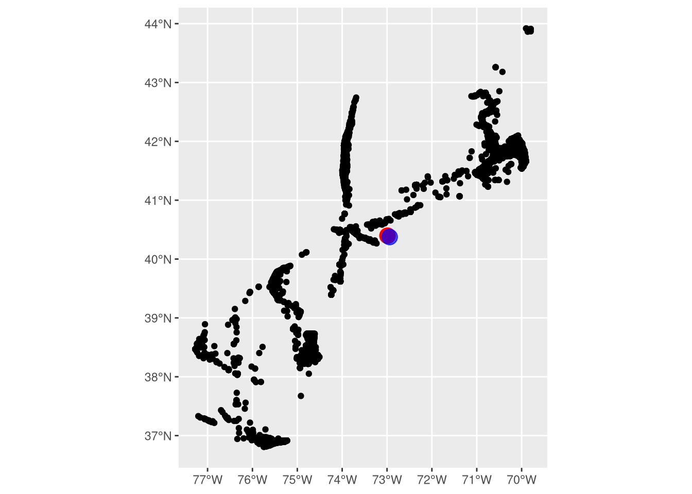
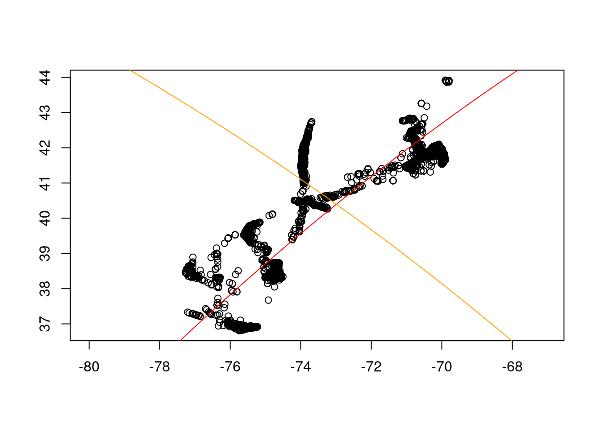
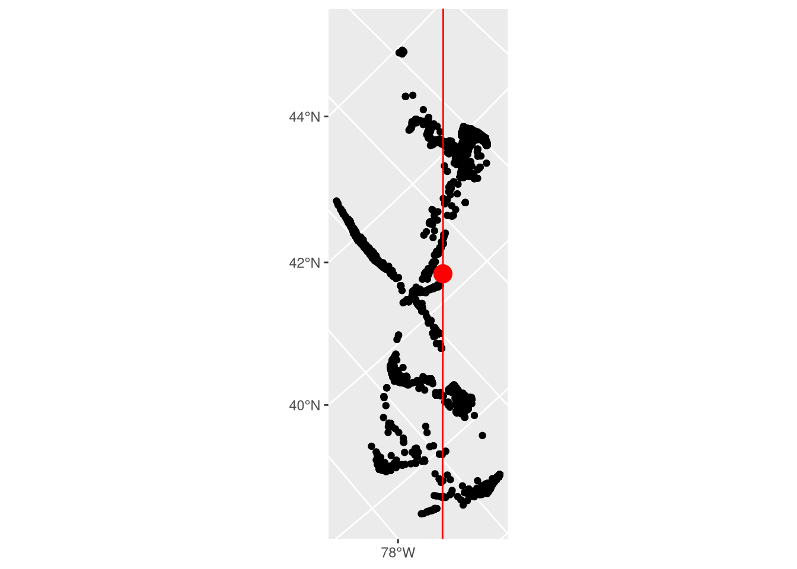

Code
library(arrow)
library(dplyr)
library(sf)
library(s2)
library(ggplot2)
library(reticulate)
py_require("geomstats")The first step of the flyway model is to rotate animal tracking data into a “migration north” frame of reference (Secor et al. 2025); we are actively researching different manners of identifying this dominant vector of migration. This report summarizes our initial investigation into the premise of modeling migration north using a tangent principal components analysis (tangent PCA). At a high level, this requires the following steps:
Before we get started, we will import the striped bass data to be used in this project. We’ve hidden the code and some of the narrative for this section as most will want to get straight to the meat of this chapter. Click below if you’re different than most, otherwise jump ahead to the next section.
Load necessary R and Python packages:
library(arrow)
library(dplyr)
library(sf)
library(s2)
library(ggplot2)
library(reticulate)
py_require("geomstats")Load the striped bass data:
sb_file <- file.path(
Sys.getenv("DATA_DIR"),
"data/derived/striped_bass.parquet"
)
sb <- open_dataset(sb_file) |>
group_by(transmitter, year, wk, group) |>
filter(latitude > 34) |> # detection's almost definitely wrong and needs to be removed
summarize(
mean_lon = mean(longitude, na.rm = TRUE),
mean_lat = mean(latitude, na.rm = TRUE)
) |>
collect()
# Viz in orthographic (globe) projection
sb_sf <- st_as_sf(sb, coords = c("mean_lon", "mean_lat"), crs = 4326)We’ll be using the Geomstats Hypersphere module in the next section, which prefers coordinates on the unit circle: X, Y, and Z values between -1 and 1. However, latitude and longitude coordinates are angles. So, we need to convert coordinates to the unit cirlce.
The s2 R package interfaces with the S2 C++ library. One of the shortcuts this library takes is to approximate the Earth as a unit sphere, which means it has a nice built-in function to convert coordinates to the unit sphere. This allows it to avoid a bunch of computationally-intensive trigonometric functions. I’ll convert the mean striped bass locations above to the unit sphere.
sb_s2 <- s2_lnglat(sb$mean_lon, sb$mean_lat) |>
as_s2_point() |>
# Geomstats package works best with matrices/arrays
as.matrix()Now, import the Hypersphere submodule, create a 2 dimensional sphere, then confirm that the points above lie on that sphere.
gs <- import("geomstats.backend")
hypersphere <- import("geomstats.geometry.hypersphere")$Hypersphere
# need to use as.integer or reticulate will pass a float, which Hypersphere does not like
sphere <- hypersphere(dim = as.integer(2))
sb_s2 |>
sphere$belongs() |>
all()[1] TRUEWe’re good to go!
Like all geometric manifolds, the Earth, being 3-dimensional and ellipsoid in shape, approximates 2-dimensional Euclidean space on small scales. This simplification can fall apart on the continental-to-hemispheric scale of migration, leading to a choice: treat location data as on an ellipsoidal manifold or project into lower-dimensional Euclidean space. As the math needed to calculate positions, directions, and areas on a manifold are far more complicated than that in Euclidean space, humans have historically chose the latter. Indeed, there are a multitude of map projections, the development of which has been an area of active research for millennia (Snyder 1993).
Map projections can generally only maintain one of the following: distance, direction, or area. Some projections can maintain two, but only in reference to a single point. As such, this center of projection is critical – we use it to define the point at which we create our tangent plane.
Usually, we could just find the point that minimizes the distance to all other points, perhaps as a mean or median. However the shortest path between two points on a manifold is not a straight line: a straight line will usually place the point within the manifold. The shortest path between two points on the Earth, the “great circle distance”, is a path along the surface: a geodesic.
The geodesic mean or median takes into account the curvature of the Earth, and ensures that the location that minimizes the distance to other points is on the surface of the Earth. Even here, we treat the Earth as a sphere, which is untrue but closer to reality than a flat plane, and convert latitude and longitude (the angle between 0\(^\circ\) and the location at the center of the Earth) to XYZ coordinates on a unit sphere.
\[\begin{align} x &= cos(lat) * cos(lon) \\ y &= cos(lat) * sin(lon) \\ z &= sin(lat) \end{align}\]
\[ arccos(X_0X_A + Y_0Y_A + Z_0Z_A) \]
We will leverage the geomstats python package to calculate the Fréchet mean, which was specified in the formulae above. The package authors have provided an excellent walkthrough on how to do this; we have adapted this to use a combination of R and Python.
Calculate the Fréchet mean:
# Calculate Frechet mean
frechet_mean <- import("geomstats.learning.frechet_mean")$FrechetMean
mean_fun <- frechet_mean(sphere)
mean_estimate <- mean_fun$fit(sb_s2)$estimate_
# Convert to lat/lon
frechet_latlon <- s2_point(
mean_estimate[1],
mean_estimate[2],
mean_estimate[3]
) |>
as_s2_lnglat()Calculate the raw mean and its distance from the Fréchet mean:
raw_mean <- s2_lnglat(mean(sb$mean_lon), mean(sb$mean_lat))
location_distance <- s2_distance(frechet_latlon, raw_mean)The Fréchet Mean of the tagged striped bass data set (black points, below) was -72.98979, 40.39643 (red point, below). A raw mean of unprojected Latitude-Longitude coordinates, i.e. treating geodetic coordinates as if they were Cartesian, was about 4.8 kilometers away at -72.94155, 40.37402 (blue point, below). Given that the minimal resolution provided by telemetry receivers in the Mid-Atlantic Bight is c. 500 meters (O’Brien and Secor 2021) and the spatial range of detections is roughly 900 kilometers, there is some evidence to suggest that a geodesic mean may be unnecessary. We will continue to trial different metrics, however, as we hope to make this method applicable to species with greater migratory range.
ggplot() +
geom_sf(data = sb_sf) +
geom_sf(data = st_as_sf(frechet_latlon), size = 5, color = "red") +
geom_sf(data = st_as_sf(raw_mean), size = 5, color = "blue", alpha = 0.7)
After finding the projection center, we need to project the coordinates onto the tangent plane. There are many ways to do this, including the whole (very active!) field of manifold learning. Luckily, the millennia of map projections comes in handy here – all projections categorized as “azimuthal” are projections of coordinates onto a tangent plane. The orthographic projection projects points from the Earth to the tangent plane orthogonally (straight line); stereographic maps points along a line connecting the plane, the point, and the point opposite the center of projection; the gnomic (or gnomonic) does the same, but uses a line connecting the plane, the point, and the center of the Earth. There are many more, but the azimuthal equidistant projection, which we will use for the rest of this report, “unwraps” the Earth onto the tangent plane, such that angles and distances are maintained from the projection center (Snyder 1987). Note that angles and distances are only maintained from the center of projection, meaning that, in this sense, distances along the migration vector will be correct, but distance from the migration vector will not. This suggests that we should further investigate other methods of projection to confirm that this is the most applicable to the task of flyway modeling.
To project an animal’s latitude and longitude coordinate in radians (\(\phi\), \(\lambda\)) from a given center of projection (\(\phi_1\), \(\lambda_0\)), where \(c\) is the angular distance from center and \(k'\) is the scale factor(Snyder 1987):
\[\begin{align} x &= k'cos(\phi)sin(\lambda-\lambda_0) \\ y &= k'[cos(\phi_1)sin(\phi)-sin(\phi_1)cos(\phi)cos(\lambda-\lambda_0)] \\ k' &= c/sin(c) \\ c &= arccos(sin(\phi_1)sin(\phi) + cos(\phi_1)cos(\phi)cos(\lambda-\lambda_0)) \end{align}\]
See next section.
Principal Components Analysis is a dimensionality reduction technique which involves creating a set of synthetic, orthogonal axes in multidimensional space where each successive axis accounts for less and less variation. As the telemetry data are two-dimensional, we can have a maximum of two axes. In the flyway concept, we view the first axis, that which explains the most spatial variation, as a vector oriented according to “migration north”. The second axis, then, represents deviation from migration north: the “migration front” (Secor et al. 2025).
tpca <- import("geomstats.learning.pca")$TangentPCA
tpca_mod <- tpca(sphere, n_components = as.integer(2))
tpca_mod$fit(sb_s2, base_point = mean_estimate)TangentPCA(n_components=2,
space=<geomstats.geometry.hypersphere.Hypersphere object at 0x7efdafd0bda0>)# transform data onto tangent plane
# tangent_sb <- tpca_mod$transform(sb_s2)
# explained variance
exp_var <- tpca_mod$explained_variance_ratio_The tangent PCA of tagged striped bass at the point of tangency calculated in Step 1 are shown below. The first axis, shown in red, reflects the fitted migration vector (first principal component, 90.1% of variance). The second axis, shown in orange, reflects the axis of the migration front (second principal component, 9.9% of variance). Note that the lines are curved: this reflects the fact that the vectors are geodesics – great-circle paths along the curved surface of the earth – rather than lines in Euclidean space.
geodesic_1 = sphere$metric$geodesic(
initial_point = mean_estimate,
initial_tangent_vec = tpca_mod$components_[1, ] |> t()
)
geodesic_2 = sphere$metric$geodesic(
initial_point = mean_estimate,
initial_tangent_vec = tpca_mod$components_[2, ] |> t()
)
# for whatever reason I can't make this work with R's `seq`, so using the geomstats version
geodesic_1_pts <- geodesic_1(gs$linspace(-0.5, 0.5, as.integer(100))) |>
# creates a 1*100*3 matrix that should be 100*3. Drop removes the empty dimension, giving 100*3
drop()
g1_s2 <- s2_point(
geodesic_1_pts[, 1],
geodesic_1_pts[, 2],
geodesic_1_pts[, 3]
) |>
as_s2_lnglat()
geodesic_2_pts <- geodesic_2(gs$linspace(
as.integer(-1),
as.integer(1),
as.integer(100)
)) |>
drop()
g2_s2 <- s2_point(
geodesic_2_pts[, 1],
geodesic_2_pts[, 2],
geodesic_2_pts[, 3]
) |>
as_s2_lnglat()
# plot tPCA
plot(s2_lnglat(sb$mean_lon, sb$mean_lat), col = "black")
plot(g1_s2, add = T, type = 'l', col = 'red')
plot(g2_s2, add = T, type = 'l', col = 'orange')
A property of the azimuthal equidistant projection (an exponential transformation onto a tangential plane) is that all distances and angles from the center of projection (point of tangency) are true. We need to calculate the angle between two vectors: a vector defined as connecting the center of projection and the north pole, and a vector defined as connecting the center of projection with any point on the first principal component. Given some distance \(D\) along the first axis and the PCA eigenvectors \(V\), we can calculate the angle of the first principal component from north. For visualization purposes, we will project the coordinates into an oblique Mercator (Snyder 1987) using the same center of projection and value of \(\gamma\). Note that this is not a critical piece of this method – it is for visualization purposes only.
\[\begin{align} a &= \begin{bmatrix} D & 0 \end{bmatrix} \\ b &= aV^T \\ \gamma &= arctan(b_1 / b_2) \end{align}\]
The formulas for the oblique Mercator on an ellipsoid are complicated and beyond the scope of this report. We refer interested parties to equations 9-11 through 9-14 and 9-35 through 9-39 in (Snyder 1987). Projection can be easily conducted using the PROJ software library using a string of the form +proj=omerc +gamma={angle from north} +lonc={Lon of center} +lat_0={lat of center}
aeqd_proj <- paste0(
'+proj=aeqd +lon_0=',
s2_x(frechet_latlon),
' +lat_0=',
s2_y(frechet_latlon)
)
gs <- import("geomstats.backend")
displaced_lonlat <- sphere$metric$exp(
tangent_vec = gs$array(0.01 * tpca_mod$components_[1, ]),
base_point = gs$array(tpca_mod$base_point_)
) |>
(\(pt) c(atan2(pt[2], pt[1]), asin(pt[3])) * 180 / pi)()
gamma <- as.numeric(frechet_latlon) |>
(\(p) p * pi / 180)() |>
(\(rad) {
rbind(
east = c(-sin(rad[1]), cos(rad[1]), 0),
north = c(
-sin(rad[2]) * cos(rad[1]),
-sin(rad[2]) * sin(rad[1]),
cos(rad[2])
)
)
})() |>
# Project 3D PC1 vector into 2D local plane
(\(R) R %*% tpca_mod$components_[1, ])() |>
# angle from North
(\(v2d) {
(do.call(atan2, as.list(v2d)) * 180 / pi + 180) * -1
})()
omerc_proj <- paste0(
'+proj=omerc +gamma=',
gamma,
' +lonc=',
s2_x(frechet_latlon),
' +lat_0=',
s2_y(frechet_latlon)
)The locations of UMCES-tagged striped bass rotated into migration north are shown below. Black points are receivers which detected striped bass, the red point is the point of tangency in the tangent PCA, and the red line is migration north (the first principal component).
ggplot() +
geom_sf(data = sb_sf) +
geom_sf(
data = st_cast(st_combine(st_as_sf(g1_s2)), "LINESTRING"),
color = "red"
) +
geom_sf(data = st_as_sf(frechet_latlon), size = 5, color = 'red') +
coord_sf(
crs = omerc_proj,
ylim = c(-5e5, 5e5)
)